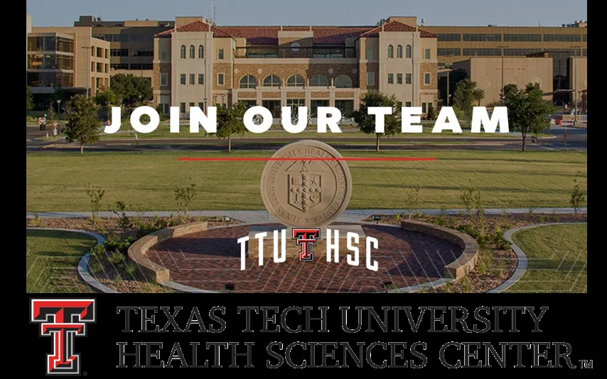
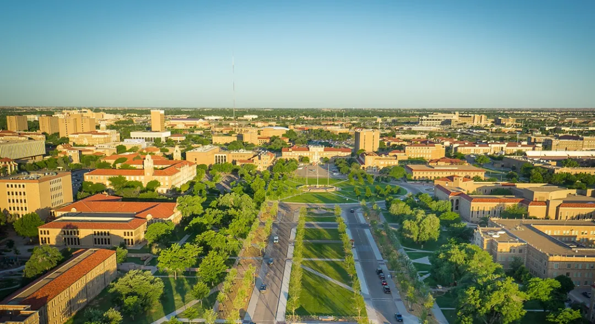

美国德州理工大学健康科学中心（TTUHSC）生物信息学、计算基因组学博后及博士生招聘
原文：https://mp.weixin.qq.com/s?__biz=MzAwMzIzOTk5OQ==&mid=2247502368&idx=1&sn=91b30972a62dbb8c7bfab82c561510e6&chksm=9b3cb370ac4b3a6688afedccf9f223d25375849cc9e912ae8fc42286b6e398108de53c3d1b3d#rd 合集：求职/求学/招聘


德州理工大学健康科学中心 Texas Tech University Health Sciences Center 全美医学排名前一百，其中临床全美排名19 （ U.S. News ）。德州理工大学是R1 大学。它是全美第二大 大学（1900英亩），也是德州唯一包含本科和研究生院及法学院和医学院于一体的综合性大学。
本课题组（dllab.org）诚聘基因组生物信息学方向博士后 数名（博后无需语言成绩无论之前您是做植物、动物、微生物，只要有相关分析技术，职等您来！ ）及博士生 数名。课题组研究方向包括生物信息学软件开发及在基因组数据分析中的应用。课题组研究资金充足，有多个研究项目，组员按兴趣特长选取。课题组拥有强大的HPC资源及组学数据（最大ME/CFS病人omics数据）。学校提供一流的科研环境及发展机会。特别优秀的博士/博士后可晋升讲师及助理教授职位，并可在拟建的组学精准医学研究中心任职。热忱欢迎有远大志向的同学加入！薪酬福利待遇极有竞争力 （底薪加奖金）。职位具体信息如下：
** **
About TTUHSC****
Texas Tech University Health Sciences Center is a top 100 Best Medical School (Ranked 19 in Primary Care by US News). Texas Tech University is an R1 University. It is the second largest contiguous campus (1,900 acres) in the US, and the only university in Texas to house an undergraduate and graduate university, law school, and medical school on the same campus.
Job Description****
Lab Description: The Li Bioinformatics and Computational Genomics Lab (dllab.org) is seeking outstanding Postdoctoral Associates in genomic sequencing data analyses and pipeline development to join our new lab and planned new Center for Genomic Medicine.About our lab: Largest ME/CFS genomics program; State-of-the-art HPC; Strong mentoring and support team. Example of our recent papers: Genome Res PMID: 30872350; Bioinformatics PMID: 30895294. The University and lab are fully committed to supporting trainee’s career development.Salary is highly competitive and is commensurate with experience and productivity.
Responsibilities:__
· Conduct genomic data-analyses (genome, transcriptome, methylome, etc.) from FASTQ/BAM files, integrative multi-omics analyses, transposable element analyses, and/or other genomic/bioinformatics analyses or software development.
·Method and software comparisons and benchmarking of available tools. Design, develop, and implement new bioinformatics pipelines.
·Optimize pipelines and parameters specific to project(s). Perform quality assurance of all workflows and analyses. Ensure all essential positive and negative controls included.
·Read literature related to current projects and incorporate into the projects.
·Maintain accurate records of methods, software, and parameters used. Ensure reproducibility.
·Draft reports and original manuscripts for publications. Present in meetings and conferences.
·Work carefully, pay attention to details, and troubleshoot bugs. Adhere to deadlines.
·Performing other job-related duties as assigned. Demonstrate self-motivation.
Required Minimum Qualifications:__
· PhD or equivalent doctorate (e.g., D.Sc., M.D.) in area of project specialization.
·Knowledge of modern research practices, the methods, resources, and standards thereof. Ability to organize work effectively, conceptualize and prioritize objectives and exercise independent judgment based on an understanding of organizational policies and activities. Ability to integrate resources, policies, and information for the determination of procedures, solutions and other outcomes. Ability to establish and maintain effective work relationships with other employees and the public. Ability to plan and allocate the workload of employees, providing direct training and supervision as needed.
Preferred Minimum Qualifications:__
· Experience in Linux command lines, HPC, genomic, transcriptomic and/or epigenomic data analyses, and/or related software comparisons and new pipeline development, etc.
How To Apply
•All applicants must submit to:
https://sjobs.brassring.com/TGnewUI/Search/Home/Home?partnerid=25898&siteid=5283#jobDetails=810460_5283
• For question, please ask the PI with CV at:
dllab.bioinformatics@gmail.com
• The positions are open until filled.
• The position updates can be seen
(https://dllab.org/positions/postdoc.pdf).
City of Lubbock
With a population of 326,546, Lubbock metro ranks as the No. 1 place for new grads. Roughly 1 in 5 residents is in their 20s, making it a good place to find friends and build a social circle. Low living costs; no State Income Taxes; ~262 days of sunshine/year, etc. See Photos.
PhD Programs****
课题组现另有多个 PhD program正在接收申请，欢迎有志于攻读博士学位的同学学者申请，具体参见课题组网站(https://dllab.org/positions/PhD.pdf)或如下链接：
Ph.D. Programs for bioinformatics and genomics research(GRE waived. Details referred to the links)
·TTU Computer Science Ph.D. (#Accept applications now for Fall 2023)
ohttps://www.depts.ttu.edu/cs/grad/phd/index.php
·TTUHSCBiomedical Sciences Ph.D. (#Accept applications now for Fall 2023)
ohttps://www.ttuhsc.edu/biomedical-sciences/
·TTU Biology Ph.D.**** (#Accept applications now for Spring 2024)
ohttps://www.depts.ttu.edu/biology/academics/graduate/programs/
·TTUHSC Dual Degree M.D./Ph.D.
点击阅读原文 即可跳转申请链接

校园风光
__
城市风光
 往期回顾
往期回顾
歪!?来"Biomamba 生信基地"兼职？************
荷兰马斯特里赫特大学Judith教授招收2023年生物信息学方向博士生求学| 寻找一个生信博导
Ulf’s Computational Biomedicine Lab 博士招聘启示
求学| 寻找一个肠道微生物或系统生物学的博导
南方科技大学第一附属医院刘利平课题组诚聘博士后中南大学湘雅医院李津臣课题组诚聘生物信息学相关多学科交叉人才福州大学医工交叉研究院徐贻佺课题组招生启事
带你们做了那么久的单细胞，也带你们找找工作
浙大医学院生物信息学 博士招生 调剂信息浙江大学招聘博士后&科研助理
加州大学洛杉矶分校招聘[staff scientists in computational biology]
毛华伟教授课题组科研博后/科研助理
赵慧英课题组科研助理招聘启事
西湖大学曾坚阳人工智能与计算生物学课题组招聘| 博士生、实习生
复旦大学马通课题组招聘|科研助理
上海交通大学医学院冯智星课题组招聘
 您点的每个赞，我都认真当成了喜欢
您点的每个赞，我都认真当成了喜欢